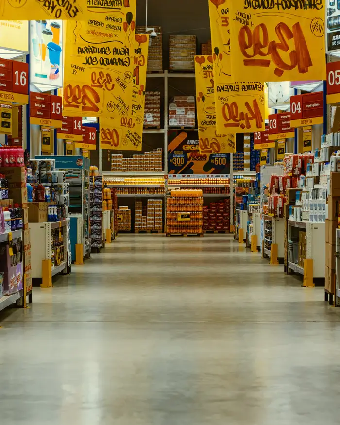

how to survive the apocalypse
We have found the top things you will need to survive the impending apocalypse. You'll find everything from backpack essentials to how to start a fire. Check out the rest of our site for camp set-up tips and how to defend yourself against The Infected.

Location, Location, Location
In order to set up the perfect camp in the apocalypse, location is key. You will need need access to food and water, and a way of defending your camp. Look below for our top tips.
-
Campsites:
- There are pros and cons to every type of camp setup. Campsite benefit from being remote, within easy access to natural resources and hunting, the location can be changed daily if needed, and all equipment can be picked up in local camping stores.
- Unfortunately, the remoteness can also be a disadvantage as you are less inclined to get any assistance in the case of attack. You are also not as likely to be able to scavenge for man-made items and foods. On top of this, you are more vulnerable to attack with the possibility of your camp being overrun by attackers, either human or Infected.
- To set up a campsite base, you will need to stock up on needed supplies and make sure you store them so you can easily quickly take them with you if you need to escape your campsite. Always be ready to run at a moments notice.
- You will need to fortify your camp to prevent attacks from animals, humans and the Infected. You can do this with trenches, pitfalls, tin can alarms, fences and guard dogs. If there are many in your group, scouting teams can be dispatched to patrol the area.
-
Abandoned Houses:
- If you didn't prepare ahead with camping gear, you could always use the buildings in your local town or village to hole up for the night. You don't have to build anything, just bring your stuff in and fortify the doors and windows.
- The disadvantage of staying in a building is you don't know if there is something in there already. If you ever enter a building, make sure to check every room and bring a strong torch with you. Even if it's daylight, strong light can sometimes deter the Infected from attacking.
- If you do plan on taking up a permanent residence in a set of buildings. make sure you secure the streets against attack. Bright lights deter the Infected, but they can also alert your enemies to your position. If there are many in your group, you can set up guard posts and have regular patrols along the perimeter.
- When selecting a building to stay in, avoid large cities and towns. These areas often become overrun early on and will be more dangerous to be around. Choose a building near a food or water source. If there is a supermarket nearby, that can provide a good store of food for some time. A stream or rainwater collector can provide a good source of water.
-
Bunkers:
- Bunkers are a great spot to survive the apocalypse, they can be both above or below ground and are often fully stocked to survive months, sometimes even years, without leaving the facility. Underground bunkers are easily defendable and can be camouflaged to avoid detection. Above-ground bunkers can be fortified with weapons of all kinds and could even contain an escape hatch.
- The biggest disadvantage of bunkers is if they are infiltrated, and there is no escape route, you will have to face the threat head-on. This is only a problem if you are not well armed or prepared to face a threat. Other disadvantages could be leaks in poorly made bunkers and a limitation of space. If you are an engineer, you may be able to make adjustments to underground bunkers without undermining the integrity of the structure. But how many of them would be about at the end of days?
- If you do decide to build a bunker now, you could speak to Tiger Sheds, a UK based cabin company, about their Zombie Fortification Cabin. This cabin can be customisable with a large water cannon for non-lethal defence, searchlights and security cameras. This Cabin is comprised of three sections, each separated by heavily secured doors. The first is a garage with roller doors, the second is a food and weapon storage area, and the third is a two-storey bedroom area, including a kitchen, gym, living room and an upper deck to give a 360-degree vantage point. There are even smart slots along the deck which provide cover while you open fire on your enemies.
- If you are one of the lucky few who arrive before they hit capacity, there is also Northern Ireland's Secret Bunker. You can find directions to the bunker on our Contact Page. But hurry, once it's full, you're on your own!


Must-Haves For Every Camp
There are a number of
-
Food Stores:
-

- Dry Foods: Canned food is a great starter food for your survival bunker. Thankfully, it's easy enough to can your own fresh food if you have the right equipment. Get creative and don't forget to ration your stores. When you can, eat your fresh food before you eat your canned foods. And make sure to check out your local wholesaler for dry goods!
- Edible Plants: Your local libraries and garden centres are your best friends. If you can get a book on edible wild plants, you can find a lot of fresh plants in the wild. Garden centres will provide you with all the seeds and equipment you will need to grow fruit and vegetables. Enjoy them in season and make sure to save your seeds!
- Fresh Meat: You can get fresh meat one of two ways, by hunting wild game or by raising livestock. If you want to hunt, you will need snares, traps and a weapon such as a bow or a rifle. The ideal animal to raise during the apocalypse is a rabbit. The reason for this is two females and one male rabbit can produce as much meat as a cow within a year. And they are small enough to be carried in a cage for a quick getaway!


-
Weapons:
- If you didn't prepare ahead with camping gear, you could always use the buildings in your local town or village to hole up for the night. You don't have to build anything, just bring your stuff in and fortify the doors and windows.
- The disadvantage of staying in a building is you don't know if there is something in there already. If you ever enter a building, make sure to check every room and bring a strong torch with you. Even if it's daylight, strong light can sometimes deter the Infected from attacking.
- If you do plan on taking up a permanent residence in a set of buildings. make sure you secure the streets against attack. Bright lights deter the Infected, but they can also alert your enemies to your position. If there are many in your group, you can set up guard posts and have regular patrols along the perimeter.
- When selecting a building to stay in, avoid large cities and towns. These areas often become overrun early on and will be more dangerous to be around. Choose a building near a food or water source. If there is a supermarket nearby, that can provide a good store of food for some time. A stream or rainwater collector can provide a good source of water.
-
Alarms:
- Bunkers are a great spot to survive the apocalypse, they can be both above or below ground and are often fully stocked to survive months, sometimes even years, without leaving the facility. Underground bunkers are easily defendable and can be camouflaged to avoid detection. Above-ground bunkers can be fortified with weapons of all kinds and could even contain an escape hatch.
- The biggest disadvantage of bunkers is if they are infiltrated, and there is no escape route, you will have to face the threat head-on. This is only a problem if you are not well armed or prepared to face a threat. Other disadvantages could be leaks in poorly made bunkers and a limitation of space. If you are an engineer, you may be able to make adjustments to underground bunkers without undermining the integrity of the structure. But how many of them would be about at the end of days?
- If you do decide to build a bunker now, you could speak to Tiger Sheds, a UK based cabin company, about their Zombie Fortification Cabin. This cabin can be customisable with a large water cannon for non-lethal defence, searchlights and security cameras. This Cabin is comprised of three sections, each separated by heavily secured doors. The first is a garage with roller doors, the second is a food and weapon storage area, and the third is a two-storey bedroom area, including a kitchen, gym, living room and an upper deck to give a 360-degree vantage point. There are even smart slots along the deck which provide cover while you open fire on your enemies.
- If you are one of the lucky few who arrive before they hit capacity, there is also Northern Ireland's Secret Bunker. You can find directions to the bunker on our Contact Page.But hurry, once it's full, you're on your own!